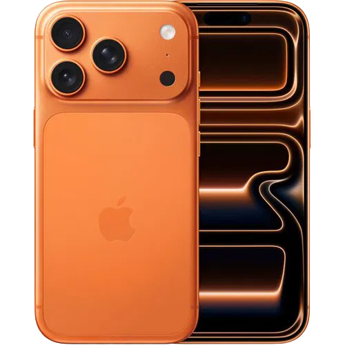
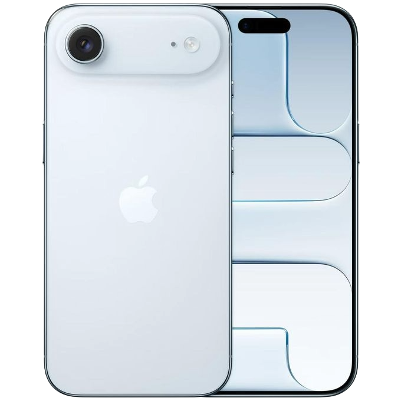
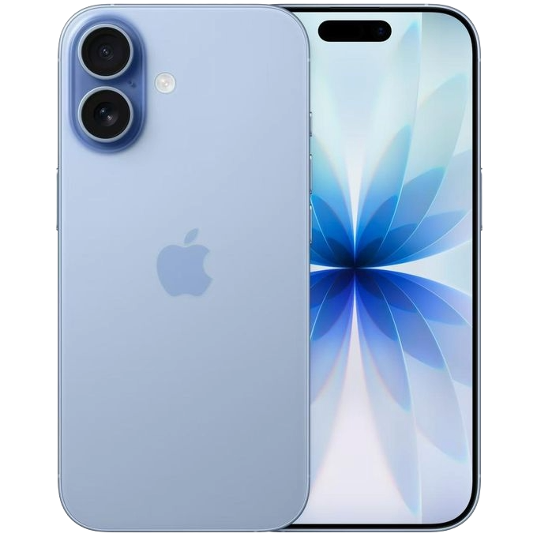
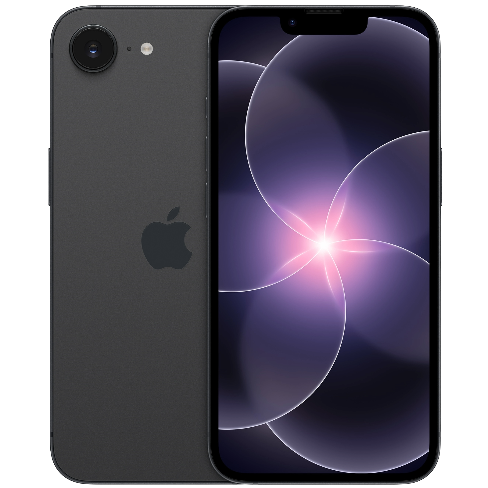
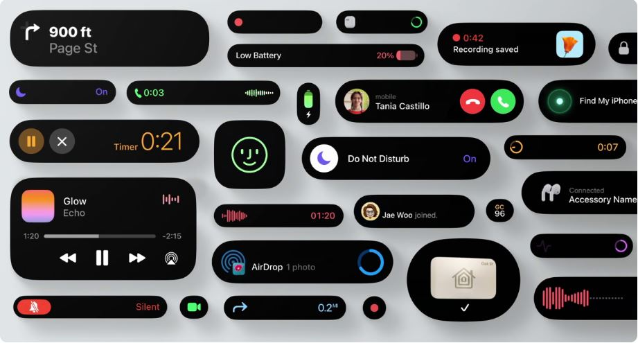

Galerija
iPhone modeli
U galeriji su predstavljeni važniji iPhone modeli. Klikom na sliku otvara se zvanična Apple stranica za izabrani model.

iPhone 17 Pro Max
Najveći i najnapredniji model, namenjen korisnicima koji žele najbolji ekran, kameru i performanse.

iPhone Air
Tanak i elegantan model, namenjen korisnicima kojima je posebno važan dizajn.

iPhone 17
Standardni model koji predstavlja dobar balans između mogućnosti, cene i izgleda.

iPhone 17e
Pristupačniji model za korisnike koji žele jednostavniji ulazak u Apple svet.

Funkcija
Dynamic Island
Dynamic Island je funkcija novijih iPhone modela koja prikazuje obaveštenja, pozive, muziku, tajmer i aktivnosti aplikacija na vrhu ekrana.
Umesto da prostor oko prednje kamere bude samo tehnički deo ekrana, Apple ga je pretvorio u koristan interaktivan element. Korisnik tako može da prati važne informacije bez prekidanja trenutnog rada na telefonu.
Korisničko iskustvo
iPhone u svakodnevnoj upotrebi
iPhone je osmišljen tako da korisnik brzo pristupi najvažnijim funkcijama: kameri, porukama, aplikacijama, internetu, fotografijama i podešavanjima. Jednostavan raspored opcija čini uređaj razumljivim i korisnicima koji nemaju mnogo tehničkog znanja.
Velika prednost iPhone-a je i dugotrajna podrška kroz ažuriranja sistema. Korisnici često mogu više godina da koriste isti uređaj, a da i dalje dobijaju nove funkcije, bezbednosna poboljšanja i stabilniji rad.
Prednosti
Zašto korisnici biraju iPhone?
Kamera
iPhone je poznat po kvalitetnim fotografijama, stabilnom video snimanju i jednostavnoj aplikaciji kamere.
iOS sistem
iOS je stabilan i pregledan operativni sistem. Korisnicima omogućava brzo, jednostavno i bezbedno korišćenje telefona.
Dugotrajnost
iPhone modeli često imaju dugotrajnu softversku podršku, što znači da se uređaj može koristiti više godina.
Uporedna tabela modela
| Model | Glavna prednost | Za koga je namenjen? |
|---|---|---|
| iPhone 17 Pro Max | Najveći ekran i najjače mogućnosti | Za korisnike koji žele maksimum |
| iPhone 17 Pro | Profesionalne mogućnosti | Za zahtevnije korisnike |
| iPhone Air | Tanak i elegantan dizajn | Za korisnike kojima je važan izgled |
| iPhone 17 | Dobar balans mogućnosti | Za većinu korisnika |
| iPhone 17e | Jednostavniji ulazak u Apple svet | Za korisnike koji žele pristupačniji iPhone |
| iPhone 16 | Moderan i stabilan telefon | Za svakodnevnu upotrebu |
Brzi vodič za izbor iPhone-a
Razlozi za kupovinu
- Odlična kamera
- Brz i stabilan sistem
- Dugotrajna podrška i ažuriranja
- Premium dizajn i kvalitet izrade
- Jednostavno korišćenje u svakodnevnim situacijama
Na šta treba obratiti pažnju?
- Cena uređaja može biti visoka
- Treba izabrati dovoljno memorije
- Zaštitna maska i staklo su korisni
- Treba odabrati model prema svojim stvarnim potrebama
Preporuka
Ako korisnik želi najbolji uređaj i ne pravi kompromis, najbolji izbor je Pro Max model. Ako želi dobar balans između cene i mogućnosti, standardni iPhone model može biti odličan izbor. Za korisnike kojima je izgled veoma važan, iPhone Air predstavlja zanimljivu opciju.